00 开篇词：了解面试“潜规则”，从海选中脱颖而出
你好，欢迎解锁由拉勾提供的面试指导课程，我是你的职场导师堃哥。目前担任拉勾网的招聘总监职务，具有近 10 年的人力资源—招聘方向的工作经验，曾经就职于美团、新东方等公司。 原本读经济学的我无意中接触到了欧洲猎头顾问的工作流程，深深被他们的专业分析能力、对企业以及候选人熟练的把控能力所吸引，他们可以帮助一家面临困难的企业寻找到合适的候选人，同时也可以帮助那些处于职业迷茫期的候选人寻找到实现自我价值的工作方向。
因此，毕业后我就回国踏入了国内的猎头行业。2010 年左右，国内猎头行业刚刚起步，所谓的猎头顾问还只是一个电话销售的职责，单纯、机械化地询问候选人是否考虑新机会。虽然和我预期的工作内容不太一样，但经过一年的电话沟通，训练了我可以通过候选人的介绍而发现他工作中和变化工作中的问题点。 后来为了进一步提升自己，进入了互联网公司。期间经历了互联网快速增长的过程、大批量的人员面试以及多样本的磨练，帮助我可以通过「快速提问、逻辑的沟通」来判读一位候选人的真实求职目的和个人性格方面的问题，帮助企业招聘的岗位从最初的助理岗到公司高管岗，从团队里的单个支撑岗位到整个新业务的建设。经过多年的磨练从最初的招聘小白，到帮助公司发现目前遇到的问题然后通过人才引入或者内部人才培养的方式使公司走出困境的招聘专家。 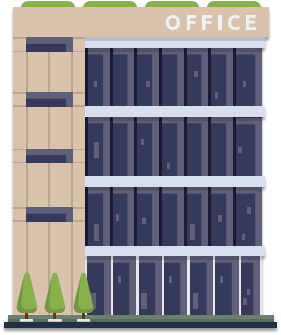
招聘市场的“551 定律”
你知道招聘市场的“551 定律”吗？ 551 定律：每一层筛选环节都会有百分之十的折损率。一个岗位从接收简历到发下 Offer 至少要筛选 500 份左右的简历、面试 50 人左右、只有 5 人左右通过面试，最终也只有 1 位候选人可以顺利入职。 对于企业内的招聘人员平均每天至少在一个岗位上要收到几百份简历，至少要面试十几个候选人，每周至少会发出 4~5 个 Offer；一周内至少同时会招聘 5~7 个不同的岗位。因此，可以看出，招聘人员的工作强度是非常巨大的，面试者需要把控好每个环节的节奏并表现优秀，才能得到最好的结果。 所以说你的简历是否对自己的工作内容和项目经历描述清晰，你的面试表达是否可以直击面试官的问题要点，你的Offer沟通是表现的完美无缺，都对你能否赢得心仪的岗位至关重要。
面试的那些事
1.简历已被阅读却迟迟没有回应 相信大部分人都会有这样的疑惑：每个求职的早上都会迫不及待的打开手机查看是否收到昨天投递简历的回复，发现都显示为“您的简历已经被阅读”的状态，带着兴奋的心情等待着心仪企业的面试邀请电话，上午过去了没有接到电话，午饭时间过去了没有接到电话，下班了仍然没有接到电话，第二天、第三天……一直没有收到任何的信息，一度以为自己的手机是否坏掉了或者怀疑招聘人员是不是忘记了拨打电话… 2.面试很顺利却迟迟没有收到录用通知 相信你也会有这样的困惑：好不容易收到面试电话，兴奋的不能自已，提前和公司请了假，穿上非常体面的衣服，吃一个元气满满的早餐，做好充分的准备去面试。面试时费尽心力地展示自己，把从事过的工作内容和听说过的项目经验全部展示在面试官面前，这时的你侃侃而谈，表现得非常自信且积极正能量。但是，不知是否留意过面试官有时候针会对一个问题进行深入的提问或者偶尔出现锁眉的动作？ 3.面试了很多公司，难道能力已被透支 相信你有过这样的经历：面试了很久，也面试过 N 家公司，最后一份录用通知书也没有收到，此时是否开始对自己的工作能力表示深深的怀疑，真的是自己不够努力吗？之前的工作能力真的那么水吗？有没有想过也许就是与招聘人员沟通时的语气，与部门负责人的一次错误的意见表达等，导致公司对你的看法完全改变了，进而错过了接受心仪公司录用通知的机会。 这时候的你是不是感觉面试的道路上充满了坎坷，对自己的能力也产生了深深的质疑？ 其实求职之路并没有想象的那么复杂，接下来我会从一个面试官的角度来告诉你在简历上需要注意的细节点以及哪些内容是必须要提到的；在面对面试官时如何张弛有度地展示自己，在沟通中如何让面试官感觉到你就是那个公司一直在寻找的人选。
专栏设计
- 本专栏将解决以下问题 首先，将讲解如何设计简历，使其具有竞争力。比如，什么样的简历是招聘人员最喜欢的，怎么样的板书清晰明了、逻辑清晰，对于自己想要面试的职位如何更好的突出自己简历的优势，哪些工作项目是为自己增分，而哪些项目即使再努力描述也只会减分等。 其次，将从投递简历的时间点和投递方式开始分析，通过大数据分析来告诉你企业招聘人员的工作作息，这样有针对性的投简历更能快速地让面试官看到。 继而，在面试过程中怎么介绍自己会显得更有逻辑、更受面试官的欢迎。面试的哪些动作是说明他对你的经历很有兴趣需要多多的展示自己，哪些动作是对你的经历有所怀疑，可以换种思路介绍。 再次，是否会想过：你对企业真的有价值吗？真的是企业在找的那个人吗？知道自己的价值后才可以更好的为自己争取符合自己能力的薪资。专栏里会简单介绍行业的薪酬情况，以帮助你更好的明确自己如何找到定位，以及当接到多个录用通知的时候，如何清晰地判断哪个最有利于自己发展。 最后，经过九九八十一难，终于收到 Offer 了。可是，怎么和公司谈离职的时候还可以得到好的离职背调评价呢？社保、公积金等福利怎么做好两家公司之间的交接工作？专栏的最后会和你分享如何优雅的分手前司。
- 你将获得 这个专栏适合所有在求职过程中遇到问题的读者，不论你是一位刚刚踏出校园的职场菜鸟，还是已经工作多年的职场老手，只要在求职过程中遇到过以上问题，都会为你解答。 通过这个专栏的学习，将有以下收获：
- 可以写出一份直接抓住面试官眼球的简历；
- 在设计简历时突出自己的优点、项目经验，以及个人特长怎么写才是最合适的；
- 面试中怎么回答一些常规问题更能获得赞许；
- 如何选出一份可以让自己职业发展最好的工作，为自己的未来做一个完美的规划。
- 课程寄语
认真看完这个专栏后，相信你通过对自己的重新塑造，在事业上能够有一个崭新和充满希望的旅程~
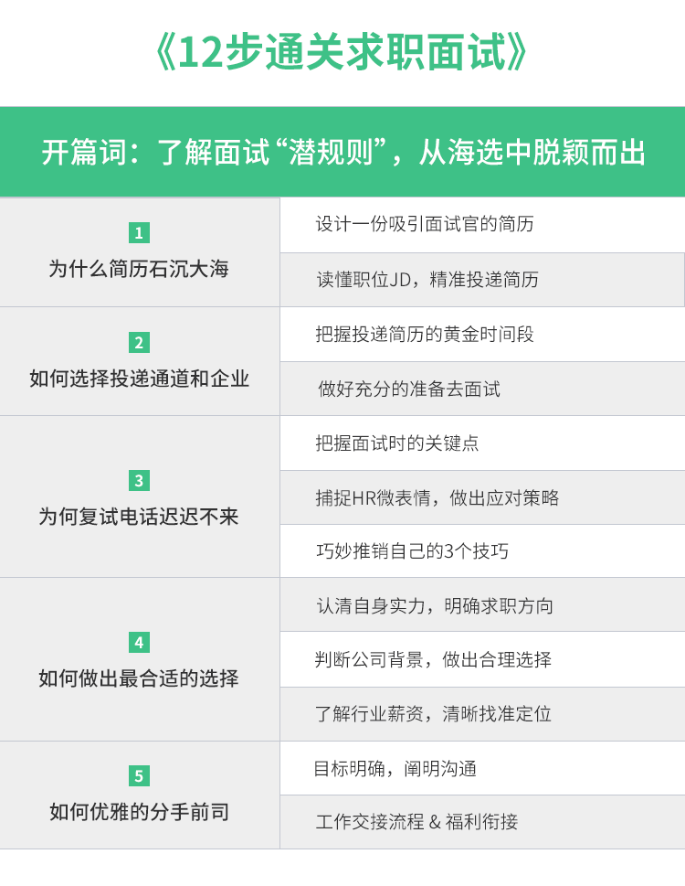
01 设计一份吸引面试官的简历
你好，我是你的面试课老师杨宇堃，欢迎进入第 01 课时的内容“设计一份吸引面试官的简历”。
1.简历的外形
如果你刚入职场，是不是企图想通过“花里胡哨”的简历模版去引起面试官的注意？比如，套用网站上很多色彩斑斓的简历模版。
其实是徒劳无功的，色彩艳丽的简历模版确实可以给人耳目一新的感觉。但这种简历模版很容易扰乱面试官的思路，从而很难注意到简历里的核心内容；而且也很难要求每位面试官的审美都能和你有共识，万一选择了一款让面试官感觉很土的简历模版，从而会错失一次很好的面试机会。
因此，简洁干净的纯色底简历模版可能是最好的选择。面试官也会把更多的注意力放在简历内容上，从而可以更好地判断你的经历是否与工作内容相符。 例如，下面是几个“花里胡哨”的简历外形截图：
可以看到上面的 3 个简历外形，明显有两个问题点：
- 背景过于丰富，很容易扰乱招聘人员；
- 很多无用信息的展示，重点不够突出。
下面是一个比较清晰的简历模版，可供参考：
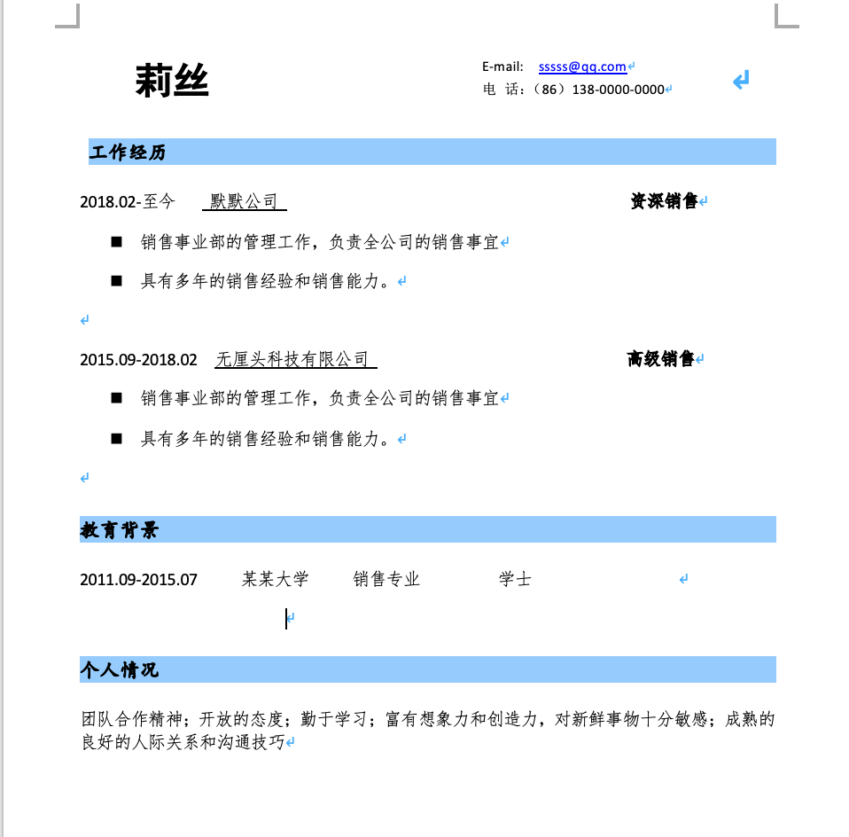
这份简历比较好的点有：
- 整体简历的排版清晰；
- 文字描述段落清晰和明确；
- 重点比较突出。
2.简历的结构与逻辑
在设计简历时可以分为几个部分进行阐述：个人信息、教育情况、工作经历、项目经历、自我评价、其他信息。
（1）个人信息
很多小伙伴在构思自己个人信息的时候，很喜欢把自己完全展示出来，如身高、体重、性别、民族、婚姻情况、政治面貌、家庭住址、籍贯等，统统都写在简历上。
但有没有思考过：这些信息是面试官所需要的吗？当然，特殊岗位可能需要提供身高、体重、籍贯、民族或者政治面貌。但是在如今这个互联网公司占据了很大就业市场的情形下，并没有太多的互联网公司在乎这些比较表面的信息，面试官往往更在乎的是姓名有没有写完整、电话号码和邮箱地址是否填写正确等，只有这些信息完整，面试官才可以快速地联系到你。其次面试官也会留意你的求职意向是否与应聘的职位相符，以及期望薪资是否在应聘岗位的范围内等。
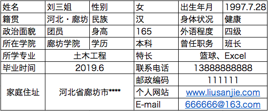
上图的简历过于繁琐，罗列的很多个人信息不是 HR 所需要的，而且很难快速地找到个人的联系方式和邮件信息，这样会给招聘人员带来很大的困扰。简单的突出自己的关键信息既可以让招聘人员轻松的获取，也能让招聘人员认为这是一个逻辑清晰的候选人。
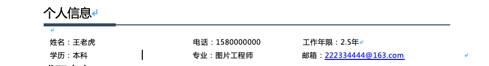
（2）教育情况
首先，建议求职的小伙伴在教育情况的部分只需要体现出正规被认证的学习经历即可，比如本科、研究生、博士生等的经历。很多小伙伴会将自己的高中，甚至初中的学习经历都要写上，也许你的初中、高中学校在家乡非常有名，但是对于企业来说很难判定和考究。因为学信网可查的学校只有大学院校，所以只需要填写高中毕业后的教育经历就好。
其次，在填写学校经历的时候只需要突出就学时间（入学时间—毕业时间）、学校名称、专业名称、学历（统招或非统招）即可。对于企业方可以很容易通过就学专业和学校判定出来你所学的内容，而不太需要你做过多的说明和解释。经常看到一些刚刚踏入职场的小伙伴在自己学校和专业信息下面会长篇大论地介绍自己的专业以及学习的科目，往往是非常徒劳无功的表现。
最后，部分小伙伴也会分享在校期间获得的所有证书和参与的活动，相信很多面试官在这里的停留不会超过 5 秒，所以，即使展示自己学习有多好也不会吸引太多的注意。倒不如在这里保持一个整洁干净的排版，将自己获得的证书或者参与自己擅长的活动信息挑一些重要的放在最后的其他信息中，这样也能给简历加分。如果觉得这里是否有些单调，可以放一些真正具有含金量的奖项。
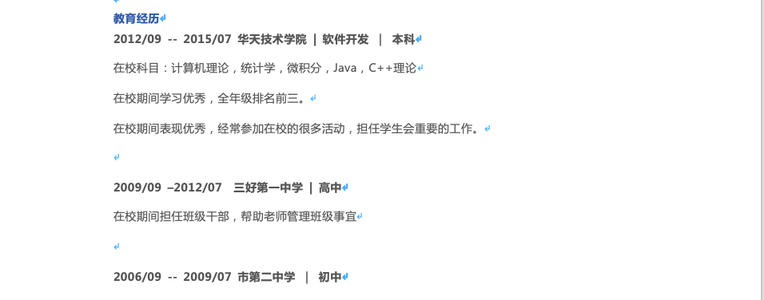
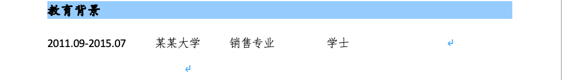
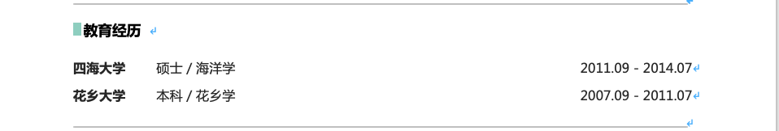
（3）工作经历
工作经历往往是企业方非常在乎的一部分，这一块也是招聘方停留时间最长的地方。在写工作经历的时候一定要清晰标注这几个内容：公司名称、工作时间（开始时间—结束时间）、职位名称、工作内容、业绩成果。
a.公司名称
目前很多互联网公司的对外名称和他们的注册名称完全不同，所以在书写公司注册名称的时候建议在后面也标注一下公司的对外名称，也是帮助面试官判定你上一家所在的公司行业和领域，因为很多互联网公司的注册名称普及度并不是很高。
b.职位名称
公司名称后面建议标注所在公司的职位名称，职位名称可以写上职位的层级 + 具体做的事情，如招聘专员、招聘主管、招聘经理、招聘总监。往往面试官会根据岗位层级看你简历内容负责的事情是否与层级相符，进而来判定你的能力。目前大多数公司内部都有岗位职级，可以在职位名称后面标注上自己目前的职级，以方便面试官清晰的判定。
c.工作时间
建议具体到年、月，如 2016.07 ~ 2019.03，这样的书写方式，面试官可以很清晰的了解你的工作年限。
提示：在写工作时间的时候一定要注意每段工作时间之间的结合期是否连贯。如果没有连贯，且中间相隔的时间周期比较长，最好增加一个说明，为什么会有那么长的空白期、这段时间在做什么等。如果连续几段经历都出现这样的断档，需要慎重思考一下是不是要改变已有的工作习惯。
如果有很多段经历，建议优先写最近的经历，然后采用倒叙的顺序来写比较合适，因为大部分企业方习惯从最近的一份工作去了解。
d.工作内容
接下来我们聊一下简历中最重要的一个部分，也就是工作内容的描述。
我知道很多小伙伴在写职位描述的时候，习惯的做法是借鉴与自己相同岗位的职位 JD，甚至有的小伙伴直接把大公司的职位 JD 粘贴到自己的简历中，表示自己做过相关的工作。
但有没有仔细阅读过这些岗位描述？往往企业在发布岗位描述的时候希望招的都是按照最全面的要求去撰写的，但是候选人的能力很少具备全部的要求，如果复制粘贴，很容易被 HR 怀疑简历的真实性。所以最好的做法是在设计简历之前，先认真的思考一下自己上一段的工作内容是什么，然后把这些工作内容按照重要程度依次精简描述出来，写到简历中。
当然，也有小伙伴说：我不太擅长文字的书写怎么办？没关系，如果你已经清晰知道自己的日常工作是什么了，也可以借鉴企业招聘职位中的描述。
假设你是一位销售助理，日常的工作为：
A.拜访客户与客户进行销售产品的沟通
B.收集客户的资料
C.日常的文档整理、合同的归档
对于 HR 来说，A 和 B 的内容更为重要，所以放在前两条来展现自己日常工作的重要性，两件或多件内容中间要做好分段，描述完一件工作内容后记得另起一段来描述下一个工作职责。
如果有多份工作经历，且工作内容都比较相似的话，最好有一个递进的关系，每一段突出一个工作重点。
来看下下面的一个简历截图，能看出里面的问题吗？
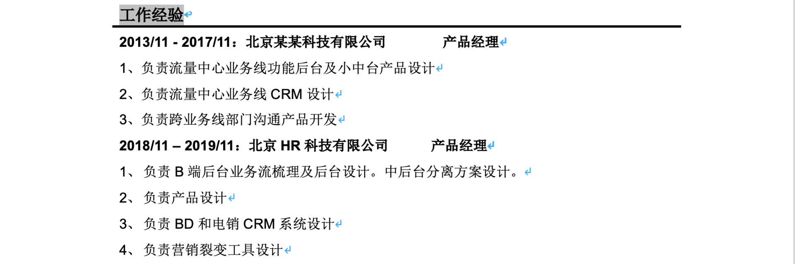
有以下几个问题点：
- 工作时间倒序，并非 HR 的日常阅读习惯；
- 两段工作经历之间留有 1 年时间的空档期，很容易让 HR 表示怀疑；
- 工作描述过于简单，几乎没有突出自己工作的亮点。
e.业绩成果
如果工作中有过一些公司认可的奖状或者某一期的绩效非常优异的话，可以在“工作内容描述”后面增加一栏“业绩成果的展示”，但是这一栏的内容不易过多，把最重要或者很有价值的公司奖项或绩效按照重要程度精简出 1 ~ 3 条即可，如「公司年度优秀员工奖」、「上季度绩效为 A」等。
（4）项目经历
项目经历其实和工作内容描述表现的形式类似，只不过项目经历不用把每段都写在简历里，只需要选出一些自己作为主要参与人或者由自己负责的项目添加在简历里就好了。
项目经历的展示也需要体现出项目名称、项目时间、项目中担任的职务、项目职责和项目业绩。如果补充项目经历的介绍，则会给简历加分，也能更容易打动面试官。
（5）自我评价
不要小看自我评价哦，这一部分是上述简历整体的一个总结，大部分面试官很希望从自我评价中整体了解候选人的情况。
所以，建议从两个方面整体的评价自己：
- 首先先对自己过去的工作内容或者过去的学习经历做个总结
- 然后对自己的个性以及工作态度做一个工作展示
比如下面的「个人优势」其思路比较清晰：
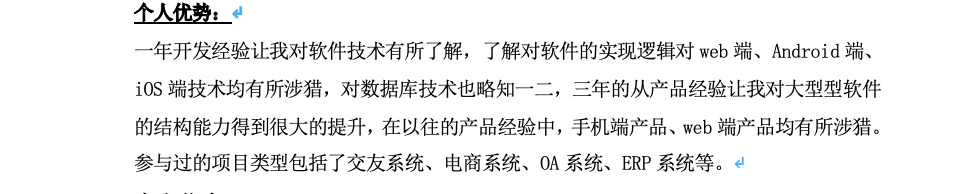
上面的自我评价是一个可参考的模板：候选人不但突出了自己的优势，而且还清晰地展示了自己的学习主动性和学习能力，进而会给招聘人员留下很好的印象。
（6）其他信息
这里如果真的写不出来，可以忽略，当然如果有一些非常值得或者有帮助的奖项亦或培训内容也可以在这里展示，比如某某专栏的发表、CPA 的认证、司法考试的证书等。
02 读懂职位 JD，精准投递简历
你好，我是你的面试课老师杨宇堃，欢迎进入第 02 课时的内容“读懂职位 JD，精准投递简历”。
1.清晰的了解用人部门的招聘要求
上一讲是关于如何设计简历，相信大部分小伙伴可以很轻松的掌握，但这只是投递简历前的一个开始，明确工作方向才是真正的关键点。 很多小伙伴在投递简历的时候，很少仔细阅读招聘公司的招聘简章，只是投递出去了，甚至一个岗位投递多次或者一个公司投递多个岗位，尤其在刚刚毕业的小伙伴身上表现非常明显。可能大部分人会认为多投递几次会被面试官看中的几率更高，但往往是相反的，如果你自己的工作内容与职位的内容完全没有关联，只会被 HR 淘汰掉，然后放进简历库，而且目前很多公司在简历库里都会对投递来不合适的简历做备注，下次使用简历的时候面试官也会查看上次的评价。
Tips：如果不想在心仪的公司里面留下污点，建议谨慎地投递简历。
需要注意，投递的内容除了职位描述以外，还需要留意公司对人才的工作年限要求和工作的职级。例如，经常看到一些刚刚工作 1 年左右的小伙伴，直接投递公司需要 8 年以上要求的总监岗位。这样会给 HR 留下非常不好的印象，会认为这份简历的候选人对自己的定位非常不清晰，甚至有时候会觉得比较浮躁。
第一印象一旦形成是非常难改变的，所以建议各位小伙伴在投递简历时一定要做好两个准备：
- 要对投递的公司做好充分的了解，清晰地知道自己投递公司的业务是否和自己的发展方向一致；
- 投递的岗位是否与你之前的工作内容相符合。
一份满足以上条件的简历才会获得用人公司的邀请。
下面是一个某公司“产品经理”的招聘要求：
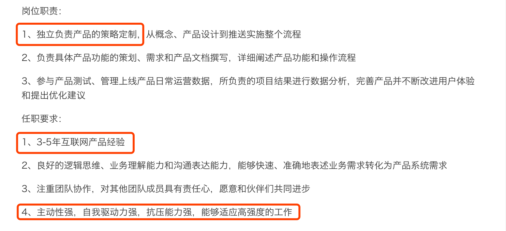
通过上面的职位描述，有几点可以注意一下：
- 在职位描述中，不断提到需要具有“独立负责…”、“负责具体…”等字样，说明这个岗位需要你能独立完成一些项目。如果你还是一个需要别人带着干活的话，最好不要盲目投递哦。
- 职位要求年限，这是一个要求有工作经验的岗位，比如需要具备 3 ~ 5 年的工作经验。往往 HR 希望求职者最好有 5 年左右的工作经验，具有 3 年工作经验是最低的要求。如果你的工作经验低于 3 年的话，就不要考虑尝试了，即使投递了也会被刷掉。
- 任职要求中的第4点，说明这份工作的强度非常大，成长性也很高。如果你是一个不希望太大工作强度或者想找一份轻松工作的小伙伴，也要好好的思考一下哦。
建议：在投递简历的时候一定要注意 HR 在职位描述中的用词和一些细节，这样才能更准确地投递到心仪的岗位，进而获得一份满意的录用通知书。
2.最合理的助攻来自自己内心的力量
好的简历内容并不是通过简单地编写就可以实现了，一定是通过每天的努力工作和不断地反思才实现的。所以，即使简历构思再完美、逻辑再缜密，如果不是自己亲身经历和努力付出过的项目经验都会很容易的被发现漏洞。
一定要认真的对待自己的工作，每次的工作变动也要对自己的职业规划做好充分思考，这样才会拥有一份完美的简历和一份完整的职业规划。
可能很多刚刚毕业的小伙伴会问：“我没有工作经历，也不知道自己做什么。如果我不去尝试怎么可能知道自己适合什么呢？”其实很多小伙伴在大学读的专业也就已经明确了自己可以从事的方向，当然如果你认为自己读的专业不是你喜欢的，也许可以选择管培生的岗位，用 1 年的时间去体会各个岗位也许会对你有所帮助。
而对于工作 2 ~ 5 年的小伙伴，相信你们已经在一个岗位上至少工作了 2 年以上，如果这个时候还在反复，此时需要慎重的思考一下自己的规划了。
03 把握投递简历的黄金时间段
你好，我是你的面试课老师杨宇堃，欢迎进入第 03 课时的内容“把握投递简历的黄金时间段”。
大家从事不同种类的工作，每天也在不断地制定自己的工作时间表。每个月总结的时候会发现有些事情总是在一个固定的时间去做，也可能在这个时间段发起同一件事情的几率非常的大，而且不止自己这样做，做同样工作的小伙伴亦如此。这就是工作种类作息时间的安排，招聘人员也一样，他们也有固定看简历和电话沟通的时间段。如果抓住这个“黄金投递点”，就等于抓住了招聘人员的视线，进而获得更多关注的可能性会更大。
HR 工作作息时间表
每个公司特别是互联网公司都有大量的招聘需求，而面对这么多的需求，公司 HR 是如何应对的？每天的工作作息时间是否有规律可循呢？
做为资深 HR 的我虽然每天都会合理安排工作时间和计划，但我自己的数据太单薄了，所以拜托拉勾网的研发小伙伴帮我调取了相关数据，其结果和我日常的工作安排非常的相似。由此可知，公司 HR 的工作节奏也都是差不多的。
下面通过曲线图的形式来展示拉勾网 HR 的工作作息表：
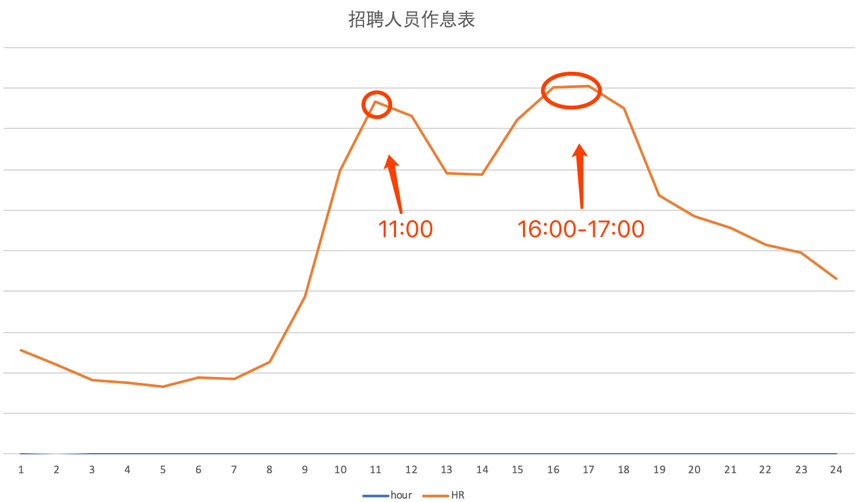
由上图可知，每天 HR 最活跃的时间段为上午 11 ~ 12 点、下午 4 点 ~ 5 点。也就是说在这两个时间段里，我们的招聘小伙伴在疯狂的筛选简历，即在招聘平台上筛选来自不同候选人的简历。
如果面试者投递简历的时间为上午的 10 ~ 11 点 或者下午的 3 ~ 4 点，那么简历有可能会被优先处理。相信你也有过体验：一天当中，上午的工作心情以及认真度普遍是最高的，也就是说投递的简历是最容易被招聘人员筛选出来的。
候选人投递时间表
上面分析了 HR 最活跃的时间段，那求职者是不是也有个投递简历的高峰期？如何错开高峰期呢？我也请研发小伙伴调取了拉勾网投递简历的数据。
下面通过曲线图的形式来展示候选人投递简历的时间表：
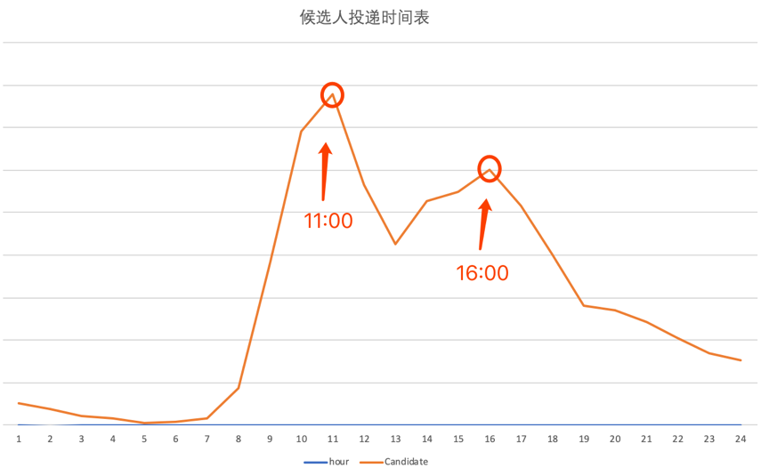
由上图可知，候选人投递简历的高峰期是在上午 11 点和下午 4 点这两个时间段，也就是说和 HR 筛选简历的时间段完全重合。相信你也有过类似的体验：当专心做某一件事情的时候，肯定不会注意到投递来的新简历，这就是为什么简历石沉大海的原因。
通过上面两个数据的分析，相信你也应该知道了 HR 筛选简历的时间段，由此可知，投递简历的“黄金时间段”在上午的 10 ~ 11 点 或者下午的 3 ~ 4 点。因此，从现在起，调整投递简历的时间吧，在更好的时间段将自己的简历呈现到 HR 的面前。
04 做好充分的准备去面试
你好，我是你的面试课老师杨宇堃，欢迎进入第 04 课时的内容“做好充分的准备去面试”。
日常 HR 的工作流程解析
可能你会问：HR 不就是每天守在电脑前等着投简历，然后第一时间去筛选简历吗？为什么还会有“投递黄金时间段”这样的说法？不应该是随时投递简历都可以吗？有这样疑惑的你就太误解 HR 的工作了，接收简历只是他们手上工作的一部分。HR 每天还需要处理其他很多的工作，就像很多不同岗位的小伙伴同时负责很多工作一样。
首先，电话沟通是 HR 核心工作内容的一部分，电话沟通并不是简单的通知候选人何时何地来面试。可是，大部分人反馈说：我每次接到电话就是通知面试，并没有说其他的。其实在电话沟通之前，HR 就已经仔细阅读过简历内容了，有疑问的地方会标记出来，在电话沟通过程中与你确认具体的问题点在哪里。
所以，电话沟通分为两种：一种是电话预约；另外一种是电话确认。
- 电话预约已经很清晰了，就是确认面试的时间。
- 电话确认一般发生在 HR 不确认你对招聘的岗位是否有兴趣或者简历存在比较大的问题的情况下。也就是说在接到电话沟通时不要表现的太过随意，因为你在电话另外一端说的任何一句话 HR 都会有一个潜意识的判断，这个判断很有可能会影响到你的面试环节。
如何在电话沟通时表现良好呢？
- 一定要对投递的公司有所了解，也正如前面说过的，很多人都是随便投递简历，最终也不记得都投递了哪些公司，所以在电话沟通时，招聘人员很不喜欢听到“请问你们公司是做什么的？”、“这个岗位的职位 JD 可以发给我看看吗？”、……，类似的声音，他们会认为你都没有认真对待这个岗位。
- 电话沟通时语气非常冷漠，明显表现出非常不高兴的情绪。其实 HR 在电话另外一端可以很清晰地听出对方的性格和表现。例如，有的人声音很消极，给 HR 的感觉是这个人对工作没有热情；有的人声音非常强硬，很容易给 HR 对方不是很好相处的印象。
因此，一定要记住自己投递过的公司和岗位信息，给 HR 一种你已经做好准备的感觉；然后掌握沟通的技巧，清晰地表达自己的想法和观点，语气尽量亲切一些，这样 HR 应该很愿意和你沟通，还能留下不错的印象。
其次，面试安排其实也会占据 HR 的很多工作时间。这个环节和电话沟通一样，你的表现也很容易被 HR 作出初步的判断。如何在面试安排时表现良好呢？
- 要有时间观念，尽量提前 5 ~ 10 分钟到达面试地点。很多招聘企业非常喜欢遵守时间的人，而且 HR 每天都会安排很多场面试，可能每个候选人的面试时间都是相连的，如果迟到很有可能会影响面试官的时间安排。如果有特殊原因，最好提前 0.5 ~ 1 个小时通知 HR，争取能调整面试的时间。
- 要保持个人卫生，相信不论到任何场合，个人卫生非常差的话很难受到欢迎。虽然不需要你穿着有多奢华，只要保持衣着整洁、干净，会给 HR 留下不错的印象。
- 保持礼貌，中国有句古话“礼多人不怪”，虽然 HR 只是帮你协调面试，但也起到了你是否可以入职的关键因素。所以保持礼貌和谦虚的心态和行为，可以得到不少的加分。
当然，除了上面提到的工作内容，很多 HR 还会负责面试、发放 Offer 以及办理入职相关的手续，这些内容将在后面详细讲解。
其他投递渠道分析
目前 HR 收取简历的主要渠道有招聘网站、猎头、内推、校园招聘这几类。接下来说说这些渠道都适合什么样的求职者，去帮助你准确地判断通过哪种渠道可以更好的找到工作以及心仪的公司。
1.招聘网站
不用过多介绍，目前很多求职者都在使用，比如拉勾网，其是一家专注垂直互联网领域的公司，如果有研发、产品、运营等互联网方向的岗位需求，可以到该网站上发布岗位或寻找人才。
我在面试的时候经常有人问：常年累月挂着招聘是真的有招人的需求吗？企业究竟是真的想要招人，还是只挂在网上做做样子?
你可能经常也会有这样的疑惑，其实很多企业挂出去的岗位目前都是在持续招聘的，可能招聘的紧急度并没有那么高，也有可能是一个储备的岗位，HR 会先将岗位挂出去，对投递来的简历会仔细审阅，直到选出最合适的人选才会安排面试。
2.猎头
猎头渠道对候选人的要求可能会更高，一般是针对高级管理者或者行业专家使用的渠道。如果你只有 1 ~ 3 年的工作经验，可能现在还用不到这个渠道。
此时的你是否有过这样的疑惑：看岗位是合适的，为什么最后得到的反馈就是不适合？
这个时候就要审视一下自己的简历，正如第01讲所分析的，是不是真的将自己的优势都凸显出来了？招聘岗位所说的内容是不是都在简历中有所体现？工作年限真的都留意到了吗？自己的项目经验是不是也都体现出来了？
3.内推 内部推荐是一个非常好的渠道，成功率非常高。如果你身边有不错关系的同学或者朋友在心仪的公司，请他内推给 HR，可能反馈非常快，不过面试结果还要看个人的努力了。
那为什么同一家公司自己投简历就没后续了，猎头推荐或内推就有面试机会呢？
其实猎头的工作并没有那么神奇，每位猎头顾问在推荐你简历的时候都会与你进行沟通，在沟通的过程中会提炼出你简历里面没有展现的优势，然后猎头会对你的简历进行修改，以突出工作中的重点，以便让 HR 清晰地捕捉到想要的信息。所以说将自己的简历写出价值是有多么重要。
4.校园招聘
校园招聘相信都经历过，这个渠道主要是针对应届毕业生的，每年都会在 3 月或者 10 月份进行。如果你已经离开校园了，也就没有办法参与这个渠道的招聘了。
那互联网企业招聘现在更看重是学历？还是本身具备的技能？
可能有的人比较忐忑：我学历背景并不是很好，企业在招聘的时候更看重学历还是看中我本身的技能呢？当然很多人会告诉你学历是非常重要的，同时企业也会注意你的学习能力。如果你在后期努力进修了更好的学历，其实可以充分的展现学习主动性，也会很获得企业的欢迎。当然如果你的项目经验非常完善，在过去的工作经历中负责过比较好的项目，那完全可以掩盖你学历上的差距。
希望通过对以上渠道的分析，能准确地使用它并获得邀约的机会和面试的流程。
05 把握面试时的关键点
你好，我是你的面试课老师杨宇堃，欢迎进入第 05 课时的内容“把握面试时的关键点”。
按照前面几讲内容的提示，终于接到心仪公司的面试邀请了，心情很激动，也伴随着一些小小的忐忑（内心OS：该如何应对面试呢？）。下面我将解读从进入公司到面试结束后的这段时间该如何表现自己，如何抓住面试官的心也就握住了这次工作机会的核心关键点。
面试前的准备工作
先说说面试前的准备吧。常规的准备相信你一定知道，比如制作一份吸引 HR 的简历、穿一身体面的衣服、整理一下自己的发型等。简历相关的准备前面已经详细讲过，这里就不多介绍了。
下面说说穿着相关的准备，很多小伙伴认为面试时的穿着并不是很重要，面试官肯定更看重个人魅力和知识的储备。当然这么说是没错的，但如果你和面试官首次见面，在还没有开始正式聊天之前，他是无法感知你的个人魅力或者知识储备的。
假如第一次见面就看到邋遢的外表或者奇怪的着装，面试官会怎么给你贴标签呢？首先他一定会认为你并不尊重这次面试，给他造成一种没有礼貌的印象；然后就是被你身上的味道熏倒无法和你多交流；最后根本来不及了解你的个人魅力和知识储备就草草地结束了这次面试。相信这个结果一定不是你想碰到的吧？所以，干净得体的着装是面试非常重要的一个环节。
面试官也会通过你的着装去判断你的性格，以及判断与公司的文化、团队的气氛是否匹配。这时可能你会问：我也没有进入到这家公司和团队，该如何判断面试当天穿什么衣服才符合这个公司的文化或者符合这个团队的气氛呢？当然，我们没有办法做到“把面试官的感受照顾到很细”的层面。
但是不同的穿着一定会表现出你的性格，有些表现出来的性格可能不会被大众所接受的，希望可以回避一下。下面简单说说几种可以表现性格的穿着：
- 喜欢穿简单朴素衣服的人，往往给人的印象是性格比较沉着稳重、为人比较真诚和随和，无论是在工作或学习上，还是在生活中，会给人一种勤奋好学、诚实肯干的感觉；
- 喜欢穿样式繁杂、颜色多样、花里胡哨的衣服的人，多是虚荣心比较强，爱表现自己而且又是乐于炫耀的人，会给人一种性格有些飞扬跋扈的感觉；
- 喜欢穿浅色衣服的人，性格比较活泼好动，十分健谈，会给人一种喜欢交朋友的感觉；
- 喜欢穿深色衣服的人，性格比较稳重，显得城府很深，会给人一种比较沉默，做人做事深谋远虑的感觉。
如果你希望在面试中表现的不是那么具有攻击力或者给人比较亲和、稳重性格的话，建议穿简单、朴素、纯色的衣服，会显得整个人比较清爽，且比较容易亲近，相信面试官也愿意和你多聊几句。当然不仅穿着干净，而且一定要注意个人卫生，最好不要让自己身上的体味过重或者使用太重味道的香水。化妆时，不建议浓妆艳抹，自然的淡妆让自己看起来很精神就可以。
如何全面的介绍自己
接下来就是面试的过程了，首先面试官会说：“请简单介绍一下自己。”
面试官有两个目的：（1）希望通过你的简单描述可以和简历上的经历做校对；（2）通过简单地介绍来看看你的逻辑和总结能力如何。所以自我介绍也是非常重要的一个环节，好的自我介绍一定要做到以下几点。
- 面试时的自我介绍
一定要把握住时间。面试时的自我介绍一般控制3～5分钟最合适，尽量不要超过10分钟。时间过短说明你根本没有清晰的介绍自己，这时面试官很难了解你到底做了什么；时间过长可能很多内容不是面试官需要的信息，这时大部分的面试官会主动打断你，从而留下了不太好的印象。
那如何把握好时间呢？建议在介绍时包含以下几个部分就好：（1）情况介绍，包括教育经历；（2）工作经验的介绍；（3）介绍最有价值的经历。这样的一个自我介绍应该可以很好的控制在5分钟左右了，既可以让面试官清晰的了解你的情况，也能表现出你的优势。
- 面试过程中需突出的几个点
在面试过程中一定要突出以下几个点：做过什么、有哪些工作业绩、优势是什么，这样可以很好的突出自己。
- 做过什么：介绍自己，把自己曾经做过的事情说清楚，每段工作对应时间节点的公司名称、担任职务、工作内容等，尤其是对最近两份工作做过的事情要重点说说，较早之前的工作经验，或者学习的经验可以一带而过，要把握“重点突出”的原则。
- 有哪些工作业绩：把自己在不同阶段做成的有代表性的项目经验介绍清楚，但是一定要注意：（1） 应与应聘岗位需要的能力相关的业绩多介绍，不相关的一笔带过或不介绍，因为面试官关注的是对用人单位有用的业绩；（2）要注意介绍你个人的业绩而不是团队业绩，要把自己最精彩的一两段业绩加以重点呈现。当然也要做好充足的准备，可以迎接面试官的提问。
- 突出自己的优势：注意介绍自己的优势一定要与应聘的岗位密切相关，主要是围绕自己专业特长来介绍。除专业特长以外的特长，特别突出可以介绍，但要点到为止。
举个例子：你好，我是某某，2018年3月加入XXX公司，担任产品经理一职，主要负责公司核心产品的规划和设计工作；在这段期间，我独立完成过XX项目的产品跟进和上线的工作，将产品的数据提升了30%，业绩突出，获得了公司的认可。在项目中，我通过学习和与外部专家的沟通，获许了XXX新策略的信息，并积极尝试，达成了我的目标。
- 每段工作的离职原因
在面试的过程中一定要突出自己职业规划的逻辑性，也就是说需要让面试官感受到你的每次工作变动都是为了个人成长以及有规划的进行变动。所以在表述的时候最好可以清晰地说出你在每段工作中的收获和成长点，当然如果在陈述这些内容时可以体现出你的个人思考，就更是画龙点睛了。
如何回答面试中的问题
相信你经常会碰到面试官问以下的问题，这些问题也是面试官给你的一些考验，如果更好地回答这些问题可能会成为你入职心仪公司的敲门砖。
- 你为什么选择我们公司？
这个问题相信不少小伙伴遇到过，可能你的原因是随便投递、公司离自己住的地方近、工资给的高、公司不加班、公司有各种补助等。如果这些答案出现在你的面试回答中，那 HR 会重新考虑是否要录用你了。
所以在回答这个问题时需要有一些准备：
- 可以先描述一下自己的能力与岗位要求的契合度，表现出在公司提供的岗位上有机会可以一展所长；
- 说出几个被企业所吸引的优点，这些优点能为以后的工作带来什么好处；
- 自己的职业发展与公司前景作出总结。
相信这些回答可以很容易抓住面试官的心，不过前期也是需要你对这家企业，以及所招聘的岗位做了一定的功课。
- 你为什么从上家公司离职？
也许你在前公司受到了委屈、也许前公司人事关系复杂所以离职，但无论前公司有多么的糟糕，都千万不能在面试时说出来。因为你在上家公司离职的原因，会使面试官联想到你会不会因为在新公司受到委屈而轻易离职？再者，面试官其实并不关心你为什么要离职，所以面试时只需要给在场所有的人一个都可以接受的答案就可以了。
例如，可以这样回答：为了更好的发展，所以选择离职。切记在回答这个问题的时候，不能贬低前公司、不要损害前领导的形象。
- 你的优点和缺点是什么？
相信很多小伙伴对这个问题都很头疼，自己的优点说的太多会让面试官感觉过于自大，可在面试的过程中又有谁愿意说自己的缺点呢？下面列举几个简单的方向，希望可以帮助你解决这个尴尬的困境。
优点：可以结合过往的工作经历和工作业绩等讲述一下自己的优势。例如，我曾经参加过某某项目，相信我的这个工作经验可以很好的帮助到公司解决什么方面的问题等。当然也可以通过一些例子说明自己的人品或性格方面的优势，哪家企业可以拒绝一位性格和能力都很好的候选人呢？
缺点：金无足赤、人无完人，要勇敢的面对自己的缺点，可以向面试官说明，你针对自己的缺点做了哪些改变，以此来说明你正在积极地改变自己去成为更优秀的人。
- 未来 3 年或 5 年，你的职业规划是什么？
当面试官问到这个问题时，是希望看到你的自我学习力和未来牵引你的职业动力是什么。对职业规划不清晰的人，很难获得成功，也不会在一个岗位上待很久，所以也不是公司最合适的人选。
当被问到你的职业规划是什么的时候，此时可以设定一个短期就能实现的规划和一个未来希望实现的目标。
例如，我希望可以在未来的 1 ~ 2 年内，梳理和参与到几个完整的项目中，从中学习和看到整个项目进度是什么样的，从而提升自己的工作能力和项目经验。在未来的 3 ~ 5 年内我希望可以独立承担项目，做一个可以让大家都能使用并且体验良好的产品出来。
这样的回答，在短期规划上会让面试官认为你是一个脚踏实地，希望可以通过学习而成长的人，而且也在积极的改变自己；在长期规划上也能让面试官感受到你对这份工作的热情，具有很强的成就动机。
- 在选工作中更看重的是什么？
很多小伙伴反馈，这个问题很难回答，其实也能想到面试官肯定更看重你的是个人成长和发展空间。当然也许你的内心想的是涨薪或者培训，虽然薪资是一定的，但是如果让面试官认为你是一个物质的人，并没有长久的培养空间，那面试的结果就可想而知了。
- 你还有什么问题吗？
这是面试结束前的最后一个问题，也可以认为是个形式问题或走个流程，此时可根据前面面试过程中的表现程度来适当的提问，比如公司福利、上下班时间、团队氛围、个人岗位发展等，但尽量不要问从网上就能查到公司信息的问题。
06 捕捉 HR 微表情，做出应对策略
你好，我是你的面试课老师杨宇堃，欢迎进入第 06 课时的内容“捕捉 HR 微表情，做出应对策略”。
在面试的过程中，如何判断自己所陈述的信息是面试官感兴趣的呢？怎么才能在恰当的时间更好地展示自己擅长的内容呢？同样，如何在不恰当的时候适可而止，更好地转换话题呢？此时需要精准地捕捉到面试官的微表情，以便在合适的时间突出自己。
沟通时需注意的小细节
你有没有经历过这样的窘境：当在描述项目经验时，突然被面试官打断了，虽然此时你正在兴头上，但也请你马上停止，面试官的打断说明他对你的这段经历比较了解，或者刚才的这段描述有了自己的判断，所以要想想刚才的描述是否有漏洞，如果有机会建议再重新解释一下。
 有时候也能发现面试官重复提问同样类型的问题，说明他对你之前回答的问题有质疑，希望可以通过重复提问的方式，再次确定这件事情的真实性，此时需要你给出不同的答案或挑选重点内容来回答，如果没有察觉，很有可能就错失了这次机会。
有时候也能发现面试官重复提问同样类型的问题，说明他对你之前回答的问题有质疑，希望可以通过重复提问的方式，再次确定这件事情的真实性，此时需要你给出不同的答案或挑选重点内容来回答，如果没有察觉，很有可能就错失了这次机会。
甚至有时候面试官针对某个项目经验进行深入提问，不断地细化你所做的项目数据。这时一定要提高警惕，因为面试官对你的这段经历比较感兴趣，需要通过非常细致地提问，才能了解你在这个项目中真实参与的程度和担任的角色。如果你的回答不够细化或者给出的数据不够精细，那么很容易被误解为并没有参与这个项目的核心内容。

面试时需留意的微表情
观察面部微表情可以解读很多信息，进而可以判断面试官是否真的对你所说的内容感兴趣，下面来讲讲面试过程中常见的几个微表情。
- 当看到面试官的下嘴唇往前撇时，说明他对接收到的信息持有怀疑的态度， 此时需要转化角度或思路来陈述。
- 当看到用牙齿咬嘴唇的时候，说明面试官正在仔细听你的介绍，同时也在默默的思考你所表达的另一层含义是什么。
- 当看到面试官调整自己的坐姿时，比如身体向前移动，很有可能对你所讲的内容很感兴趣；如果发现面试官身体逐渐的后退，说明很有可能对你的这段介绍没有兴趣聆听，此时要及时的调整陈述的思路。
- 当发现面试官双臂交叉时，这是防卫的一种表现。很有可能你说的内容与他的认知完全不相符，也表现出面试官对你表述的观点完全不认同或者完全没有听懂你所表达的意思。
上面简单讲了一些面试过程中可能碰到的情况，希望你在以后的面试过程中及时捕捉到面试官的微表情，以做出应对的策略。
其实很多时候面试官也在捕捉你的面部表情。当你在阐述的过程中，面试官在倾听是否有漏洞，也许不经意的某个动作或者某句话，也能让面试官察觉到你的问题点，然后做出不一样的决定。所以管理好自己的微表情也是非常有必要的，下面我们来说说在面试时做出的一些不经意的错误微表情有哪些。
面试时需改掉不好的习惯
有时候一个沟通时的习惯，也能透露出一些问题，比如：
- 当习惯说“啊”、“呀”、“这个”、“那个”、“嗯”等口头语时，一般给人留下词汇量小或者思维慢的印象，在说话时需要利用间歇的方式让自己思考；
- 沟通时喜欢使用中英搭配，这样很容易给人一种虚荣心比较强、好表现或夸耀自己的错觉；
- 如果口头禅出现频率过高的话，很容易给人一种办事不干练、意志不坚定的印象。
当然说话声音的大小或者语速的快慢等这些信息也能让面试官初步判断你是一个什么性格的人。
- 说话声音的大小和一个人的性格联系非常紧密，喜欢大声说话的人，其性格比较以自我为中心，积极主动、行动力和支配欲强，也就是富有攻击性的一类人；说话声音小的人其性格比较偏内向，考虑的因素比较多，很压制自己的情感。
- 语速快慢和声音大小一样，一般语速快的人性格比较外向，有冲劲且有活力，但是常常给人一种紧张和压迫感，让人有种焦躁、混乱甚至有些粗鲁的感觉；但是语速慢的人容易让人感觉比较木讷，容易犹豫不决，甚至有时候有消极悲观的想法。
所以说需要根据你所从事的工作或者要应聘的岗位来调整自己说话的方式，才更能获得面试官的青睐。假如你是一位声音小而且语速慢的人，去面试一家公司的销售岗位，相信这家公司不会对你抛出橄榄枝，因为他们很难从你的沟通中看出你的销售潜力。
面试中透露出的动作，也需要多多留意
很多小伙伴可能没有留意在面试过程中做的一些小动作，也许就是这些小动作导致面试官对你的印象减分。下面简单说几个常见的小动作，希望可以帮到你。
- 吐舌头：一般在感受到有压力时，舌头不自觉地做出舔嘴唇或者看似是在舔嘴唇的动作，说明是对自我的一种安慰。如果做了这个动作说明当时你备感尴尬，希望可以缓解一下气氛。
- 用手捂住嘴巴：这个动作一般表示自己对刚刚说的话已经意识到了错误，下意识的去捂住自己的嘴巴。
- 十指交叉：这个动作很可能是自信的表现，也有可能是在掩盖你的紧张。如果你的十指无意识的交叉在一起，而且眼神也在躲避面试官，很有可能是怕面试官发现你的紧张。
- 抚摸颈部：这个动作说明你并不是很自信，当然也有可能是你正在释放压力，这是一种普遍有力的信号，说明大脑正在积极处理某种消极的情绪。
- 眼神躲避：很多候选人在面试的过程中，经常左顾右看，躲避面试官的眼神，给面试官一种心虚的表现。
当然还有一些其他的小动作，比如揉鼻子、挠头或者摸耳朵、翘二郎腿或抖腿、常扶眼镜、玩弄随身小物件、咬指甲等，这些小动作也都说明你比较紧张或者不够自信。
希望你可以通过这一课时的学习，合理地控制一下自己的微表情，在面试时更好地表现自己。
07 巧妙推销自己的 3 个技巧
你好，我是你的面试课老师杨宇堃，欢迎进入第 07 课时的内容“巧妙推销自己的 3 个技巧”。
平和的心态，展现你的热情
对于任何一家企业在选择合适的人选时，一般都会从这几个方面进行筛选：首先是否具有相关的项目经验；其次是否聪明或者是否具有独自解决问题的能力；最后判断能否融入到团队的氛围中，以及是否对企业或者行业具有热情的态度来面对。
前两个方面所说的是面试者的行业经验和智商，对于一家公司在招聘时当然重要，但这并不是一个团队可以获得成功的关键因素。相信很多企业在选择五年经验以内的候选人时，这两个方面的考察一定会低于最后性格部分的考察。
相信很多小伙伴会有疑问，性格（工作热情）相比情商或工作经验对于一家企业真有那么重要吗？这个我可以肯定的告诉你，面试官非常喜欢性格开朗、积极主动、乐于挑战的候选人；同样也很排斥在乎个人得失、把责任都推给前司的候选人。相信你在工作中也会遇到过类似的同事，可以回忆一下，当时你是不是也很排斥呢？
 在一个团队里如果存在一位性格比较消极的员工，很容易将其他员工传染，从而导致整个团队产出效率低下。也就是我们常说的“酒与污水定律”：是指把一勺酒倒入到一桶污水里，得到是一桶污水；如果把一勺污水倒入倒一桶酒中，得到的还是一桶污水。所以，对于面试官来说，候选人的性格和态度是至关重要的。
在一个团队里如果存在一位性格比较消极的员工，很容易将其他员工传染，从而导致整个团队产出效率低下。也就是我们常说的“酒与污水定律”：是指把一勺酒倒入到一桶污水里，得到是一桶污水；如果把一勺污水倒入倒一桶酒中，得到的还是一桶污水。所以，对于面试官来说，候选人的性格和态度是至关重要的。
如何在面试官面前表现出积极正向、乐观的心态呢？
首先，需要表现出对应聘岗位和企业的认同感，也让面试官看到你为了这份工作做了很充分的准备，或者积极的介绍之前做过的项目与应聘企业项目的相似度。这些表现都可以让面试官感受到你的热情和积极正向的输出，非常不建议面试时问什么答什么的做法。
比如，当面试官问「你为什么选择目前的这份工作」时？如果只是单纯地回答「我喜欢这份工作」且没有任何的解释，那面试官无法判断你所说的真实性。此时建议这样回答：“因为目前这份工作和我之前做过的 xxx 项目非常相像。我在参与上一份项目时学习到了 xxx 技能，找到了一个新的发展方向，从而喜欢上了这样的一份职业。”，相信这样的表述面试官才能感受到你的热情和积极正向的态度。
其次，可以和面试官介绍一下，你在上一家公司与同事和领导相处融洽的案例，让面试官感受到你是一个积极融入团队中的人。比如「在前司获得的成长有哪些，与前 leader 的身上都学习到了哪些工作思路和成长思路等」，相信面试官会认为你是一个非常值得培养和积极主动学习的人。
了解行业发展，清晰表达你的见解
除了表现出积极和热情以外，如果在面试的过程中可以介绍一些你对行业以及对自己所从事工作的理解或见解，相信面试官一定会被你的表述深深吸引，也同样加强了希望可以录取你的信心。
比如，当面试官问「你怎么看对目前所从事的工作价值」时，如果这样回答「我觉得这是一份收入，并没有太多的感受，也不知道自己未来的发展是什么样的」，面试官会判断你是一个没有任何思考的人，应该也不会在自己的岗位上有什么作为。
此时建议这样回答：“我非常喜欢我的工作，我感觉我的岗位在目前行业的发展中起到了非常重要的作用，我们所做的几个项目都在推动公司的发展，也帮助公司的业绩从 XX% 提升到了 XX%（在这里举一些自己做过的项目经验），而且我也希望可以继续从事这样的工作，因为它可以让我获得更多的成就感。相信这个行业的发展是 xxxxxxxxx，我的职业规划也会跟随这个行业的发展而得到很大的提升。”
当面试官听到这样的介绍时，会非常清晰地了解你对自己的工作已经有了深入的思考，同时也能感受到你不止局限在自己的工作领域中，还在通过行业的变化和了解，来规划自己的职业，是一个很有潜力的候选人。
真诚的对待每一次面试
当然除了积极的态度以及清晰的定位以外，还必须是一个真诚、正直的人。如果在面试的过程中表现良好、思考很全面，但是与实际工作的内容只有 50% 的真实度，这样会很容易在面试官面前露馅，然后给你打上一个不真诚的标签，自然而然，面试也就到此结束了。
因此，很多企业非常在乎候选人是否诚实或者真诚。也许你的职业经历并不是很丰富、项目内容并没有那么完美，但如果将自己所做的内容真实、完整地呈现给面试官，同时加上自己的思考，相信很多面试官会参考你的工作年限然后给你一个非常公平的反馈。
通过以上三个方面的讲述，可以了解到面试官在面试的时候更看重的是品德，然后是性格，最后才是工作经验和学历。希望你听完这一讲的内容后，可以积极主动地面对自己的岗位，更好的去思考如何巧妙的推销自己。
08 认清自身实力，明确求职方向
你好，我是你的面试课老师杨宇堃，欢迎进入第 08 课时的内容“认清自身实力，明确求职方向”。 这一讲我们来分析如何更好的认识自己，此时的你可能会很奇怪，我们不是在分析面试时的技巧，以及顺利收到 Offer 吗，为什么这一讲要分析如何看清自己了呢？其实也不奇怪只有更好的认清楚自己，才能更好的明确方向以及获得更好的岗位。
认清自己的实力
我经常会被身边的小伙伴问到：我应该选择什么工作方向啊？目前的工作好累啊，想换个工作方向但是不知道如何选择？某某行业的薪资好高啊，要不我去试试吧？
 如果这样问，有可能被目前社会的很多利益所引导，已经忘了出发点是什么或者没有思考过未来的职业规划。平时也会听到身边有人说“希望可以拥有一家自己的咖啡厅”，如果这只是一句玩笑话，说说就过去了；但如果你是认真的，那有没有考虑过：在做这件事情之前都准备了什么呢？所以，在选择工作时先要想想自己的擅长点是什么，同时为这份工作做了哪些准备等。
这里我给你推荐一款职业人格评估工具，即 MBTI，来测一测自己是偏外向还是内向、是一个有规划的人还是一个探索性的人、是喜欢做挑战性的工作还是喜欢辅助团队做一些执行层面的工作等，当然在测试的时候要依托于自己的内心哦。
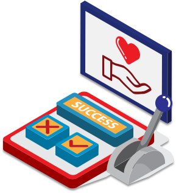
如果这样问，有可能被目前社会的很多利益所引导，已经忘了出发点是什么或者没有思考过未来的职业规划。平时也会听到身边有人说“希望可以拥有一家自己的咖啡厅”，如果这只是一句玩笑话，说说就过去了；但如果你是认真的，那有没有考虑过：在做这件事情之前都准备了什么呢？所以，在选择工作时先要想想自己的擅长点是什么，同时为这份工作做了哪些准备等。
这里我给你推荐一款职业人格评估工具，即 MBTI，来测一测自己是偏外向还是内向、是一个有规划的人还是一个探索性的人、是喜欢做挑战性的工作还是喜欢辅助团队做一些执行层面的工作等，当然在测试的时候要依托于自己的内心哦。
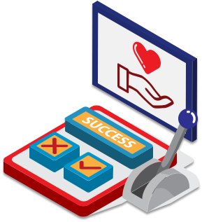
明确求职方向
测试完以后就要开始思考到底该如何明确求职方向，其实是发挥出自己的优势，去寻找一份适合的工作。俗话说「360 行，行行出状元」，相信任何一份工作的发展前景都是非常光明的，只要在某一份工作上做的足够深入且全面，相信你的职业道路也会越来越宽广。尽量不要对自己还没有接触过的事情就开始焦虑，这样会限制自己的想法。 比如，现在大家求职一般会从两个方面考虑，即领域相关的和专业度相关的。
- 领域相关的可分为互联企业和传统企业，比如，如果你是一个充满创新能力且积极愿意改变自己生活的人，可以选择去互联网行业；如果你比较喜欢稳定，对程序化的工作比较看重可以选择去传统企业。
- 专业度相关的可分为：硬技能型和软技能型。例如，硬技能型有编辑、会计、研发、法律、统计等；软技能型有销售、活动执行、客服、创意等。 具体可参考如下表格： | | 互联网 | 传统行业 | | ---- | ---------------------- | ---------------- | | 硬性 | 研发工程师、数据分析师 | 会计、机械师 | | 软性 | 产品经理、市场、销售 | 销售、市场、客服 | 根据拉勾后台数据的显示，以下是互联网行业热门岗位的 Top 5：
- 研发工程师岗位需要具备技术能力、逻辑能力、时间观念等
- 产品经理岗位需要具备逻辑能力、沟通能力、执行力等
- 运营岗位需要具备一定的分析能力以及对宏观的管理能力等
- 市场岗位需要具备创意的想法、有一个开朗的性格、沟通能力等
- 销售岗位需要具备较强的沟通能力且有一个开朗的性格等 若想了解其他具体的岗位详情，建议可通过 MBTI 的测试来了解自己擅长的工作岗位，相信测试完后的结果与测试前的认知岗位会有重合。此时，可以通过拉勾网站去搜索密切度高的岗位，然后查看该岗位的职位 JD，建议搜索查看同一岗位的多家职位 JD，把JD 重合的部分标记出来，其实这些就是该岗位所必需的技能；当然了，多家职位 JD 也有不同的要求，这时可根据自己擅长的点和过往的经历来选出最合适的公司。 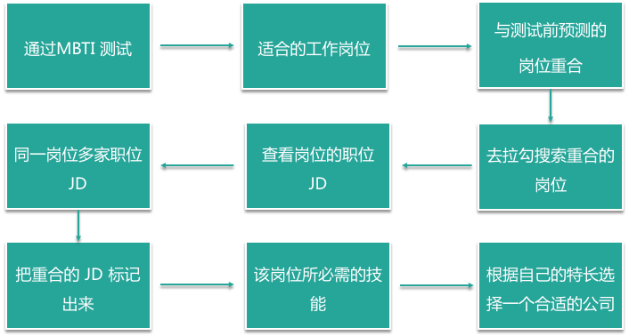 也可以通过回复你和对你产生邀约的公司的职位要求进行描述，再次验证是否真的是你的技能方向。 找到自己发展的方向是一方面，当然也需要你对自己的工作年限和自我能力作出正确的认知。在我多年的筛选简历中，经常可以收到一个工作三年左右的小伙伴投递了公司高管的岗位，也许你的职位优势是一个非常具有管理能力的人，但是对于高管岗位还是需要你有很多年的工作经验和项目经验做累计的。所以建议大家在投递简历的时候也要明确自己应该在什么工作年限和工作的阶段，从而找到最合适自己的岗位。 相信通过几年的磨练，在目前的岗位上，也能很快得到大家希望有用的职级和薪资。
09 判断公司背景，做出合理选择
你好，我是你的面试课老师杨宇堃，欢迎进入第 09 课时的内容“判断公司背景，做出合理选择”。 前面的几讲我们讨论了面试时需要做哪些准备，以及分析了如何投递心仪的公司。在投递简历时除了心仪的大厂以外，也可以考虑投递一些不知名的公司，但如何判断这些不知名的公司是否靠谱，或者说如何知道哪家公司才是最适合自己的呢？接下来我将和你一起探讨。 有一些小伙伴因为没有提前了解公司，只是单纯急切地想拥有一份工作，最终可能导致入职后不久会再次选择离职。所以，判断一家公司是否合适，对自己的职业规划才是一种非常负责的态度。那下面我们就好好聊一聊，判断公司背景的几个方法。
通过网站上展示的相关信息来判断
互联网对于大家来说已经不是那么陌生了，所以很多企业的信息都可以在互联网上获得。我们可以通过这家公司的官网去了解它的基础业务和公司发展信息；也可以通过拉勾招聘网站上的企业界面介绍页去了解这家公司的基础信息。如果还不放心的话，还可以到“天眼查”或者“企查查”官网上查一下这家公司是否是一家正常运营的公司。 当查到这些信息后该如何判断公司的背景呢？ （1）公司****的主营业务。可以查看目前这个主营业务是不是你希望从事的，是行业内的蓝海还是一个比较传统的业务。比如可以通过传播媒体的报道来了解；或者如果一家公司在一年内迅速扩张，那这家公司必然是蓝海企业。 （2）公司的****融资情况。可以通过了解公司的融资轮次以及投资的金融机构来验证是否是一个成熟的公司，因为优秀的金融机构对公司进行投资会非常谨慎。 （3）公司****的人员规模和办公地点。这些也可以判断一家公司的情况，假如公司人员比较多，则说明业务可能更为稳定一些，办公地点在比较正规的办公大厦里也代表了一种稳定的因素。当然不是说好的办公地点和公司人员数量多就是最好的公司，也有不少几个人的初创公司也是很值得考虑的。 （4）公司的****创办时间。除了以上因素以外，肯定要考虑公司的创办时间，可能刚刚开始创办的公司不具备那么好的条件。如果你比较喜欢初创业的公司，那么可以通过公司经营的业务和投资机构的名气去判断；但是如果是一个创办时间比较久的公司，可能就要考虑得稍微多一些了。 （5）收集创始人在网上的演讲稿。从他们的演讲稿中获得一些信息，通过对这个人的看法对比是否和你期望的企业形式一致，也可以判断出他是否具有行业的眼光，但是尽量避免跳入公关稿的坑里去。 当然不排除一些经营很好，但是企业规模和融资情况一般的公司，这个也需要通过其他方面的信息去判断。
通过来自内部人员的信息判断
以上是通过拉勾招聘网站上的公司介绍页以及企业官网来判断公司的背景，但只是了解这个公司的表面信息，想了解这家公司真实的具体情况和管理风格，通过以下的方式可能会更清晰一些。 （1）如果这家公司中有熟悉的朋友（或前同事）或者学长学姐的话就比较方便了，可以问一下他们关于公司内部的团队、部门、上下班时间、福利等情况，甚至可以问一下团队领导的风格是怎样的。 （2）如果你没有这样的朋友关系，也可以通过职言或者论坛的讨论去看看这个公司内部的员工是怎么评价公司的。
面试时通过面试官的言行举止判断
在面试的过程中，还可以通过与面试官的交流去判断这家公司的情况，如果面试官在面试过程中表现的比较有条理、沟通比较有素质，则可以说明这家公司还是不错的选择；也可以通过对公司环境的观察来判断这家公司的情况。当然你也可以看看拉勾网企业界面的面试评价区，去了解一下其他面试者对这家公司的评价。 相信通过以上几种方法，可以比较清晰地了解一家公司的情况，也可以帮助你更好的去判断这家公司是否值得去。
10 了解行业薪资，清晰找准定位
你好，我是你的面试课老师杨宇堃，欢迎进入第 10 课时的内容“了解行业薪资，清晰找准定位”。
清晰找准自己的定位
相信面试到这里你已经在谈薪资了，此时的你是否会有这样的疑惑：我所期望的薪资是否能给到呢？在这里我建议你一定要对自己有清晰的定位，比如可根据你的工作年限、工作经验以及对市场行情等全方位的了解后，才能拿到合理的薪资，也会让企业认为你物有所值。 那如何才能争取比较合适的薪资呢？很多小伙伴会根据身边的朋友来判断自己的薪资是否合理。但是很多人没有考虑到，大家的学历不同、做过的项目不同、所应聘的公司也不同，那么薪资水平也很可能会有较大的差距，所以一定要明确自己的情况是怎么样的。
（1）如果你是应届生
如果你是一个刚刚毕业的小伙伴，如果从事的是基础的岗位一般薪资基本在 4 ~ 8K，但如果选择做程序员，假如学校背景还不错的话，薪资可在 10 ~ 15 K。 不过，不用太在意薪资这一块，毕竟找一个有前景的工作会更重要，建议对自己有一个短期（1~2 年）的职业规划，相信在不久的将来，薪资也会翻倍的。
（2）如果你有工作经验
如果你已经是一个在专业领域工作多年的候选人，行业经验也非常丰富，相信丰富的经验可以为你创造比较高的收入，你可以比对行业的知名公司职级的薪资结构去判断自己的薪资情况。

（3）如果你有项目经验
当然也可能有小伙伴会问，如果我前一家公司的薪资高于市场行情，换一家公司是否需要继续要求增加薪资，还是考虑降薪？ 这个问题我认为可以根据你的项目经验来考虑。如果你的项目经验是行业非常急需而且比较难得的，同时你又做得比较突出，你要求一个合理涨幅，很多公司也是愿意的。但是如果你的工作表现一般，只是一个负责副线项目的人，我认为对你来说很难争取到新的提成，所以不如脚踏实地地去做一个比较稳定的项目，为自己多积累一些相关的经验，也为后面的涨薪做铺垫。
一些行业的薪酬报告
下图是某热门岗位的行业薪酬报告：

图中的一些信息只是一些简单的分析，可以看出 2019 年整个互联网行业的薪资增长并不是很高，相比 2018 年下降了很多。这说明很多公司并没有那么多涨薪的预算，所以在选择公司的时候如果要求过高，很难获得心仪公司的 Offer。 其他岗位的薪资报告，建议你到拉勾招聘网站上搜索多家企业发布的同一职位的薪资范围，通过对比来判断该职位的薪资涨幅，但一般企业为了吸引人才，会将薪资范围提高，所以要酌情考虑。 比如下面是高科技与互联网行业的职位薪资情况：
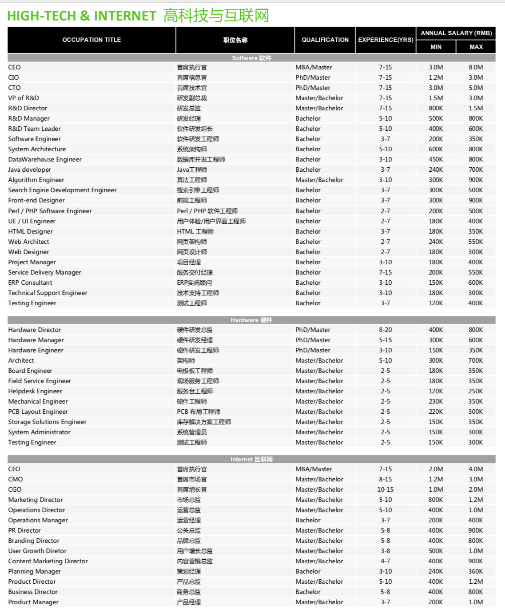
上面的薪资情况，只是工程师的薪酬范围报告，仅供参考。
11 目标明确，阐明沟通
你好，我是你的面试课老师杨宇堃，欢迎进入第 11 课时的内容“目标明确，阐明沟通”。 前面的两讲内容和你分享了如何明确自己所希望从事的职位和工作性质，也帮你梳理了如何更好地判断自己的价值产出在哪里。明确目标后，接下来聊聊如何更好地沟通才能拿下心仪的 Offer。 下面我们就说说在谈 Offer 时都需要做哪些准备。
知道自己想要什么
在开始谈薪资之前，需要明确自己到底想要什么，希望在这次的工作变动中有什么收获，比如想在团队氛围很和谐的公司里工作、希望积累更多的项目经验、还是仅仅为了涨薪等。
当你明确自己想要的是什么，同时清晰的表达出来以后，HR 会根据你的需求去匹配这个职位是否可以给到你所期望的东西，或者你也可以直接询问 HR 来判断是否能得到你想要的。
 很多小伙伴会说，如果我确实不知道自己这次换工作想要得到什么，该怎么办？
你可以参考在之前的工作过程中，是不是有让自己感觉不舒服或者有挫败感的时候，同时想想是什么原因造成的，然后把它们整理出来写在纸上，标出来哪些是你希望可以得到改善和需要得到成长的。
通过这样的方式，再去想想在面试的过程中或者在和面试官沟通的过程中，这家企业是否可以给到你想要的东西。
很多小伙伴会说，如果我确实不知道自己这次换工作想要得到什么，该怎么办？
你可以参考在之前的工作过程中，是不是有让自己感觉不舒服或者有挫败感的时候，同时想想是什么原因造成的，然后把它们整理出来写在纸上，标出来哪些是你希望可以得到改善和需要得到成长的。
通过这样的方式，再去想想在面试的过程中或者在和面试官沟通的过程中，这家企业是否可以给到你想要的东西。
明确自己的优势
明确了自己想要的，也要知道你能给企业创造出什么样的价值，这样才可以在薪资上做更有利的争取。面试结束后，HR 已经对你的表现做了公正的评价，相信这些评价一定都是你对企业有价值的地方。 那怎么评估自己优势的价值呢？ 首先要明确，你的优势是软性的优势还是硬性的优势：
- 软性的优势是指性格方面（比如性格好、踏实），相信很多人都具备，所以这个优势的价值可能就没有那么大的竞争力；
- 硬性的优势是指之前的工作经历给到的优势（比如项目经历、专业经历），这样的优势相比软性优势要更有竞争力。 其次如果你的硬性优势又是比较稀缺的项目经验或者专业经历的话，那就更有竞争力了。
不要敌化与 HR 的关系
在谈 Offer 的时候，最终肯定会落在谈薪资的问题上，你是不是也会有这样的感觉：明明招聘网站上写的很高，HR 却说给不了这么高？
因为招聘网站上显示的薪资范围，为了吸引用户会稍微提高一点薪酬水平。但是主要确定你薪资的并不是网站上的薪酬范围，而是你的真实能力。因为 HR 会根据你的真实能力去判断你在什么薪酬档位上，然后给出你合适的薪资。所以并不是 HR 不愿意给你高薪，要判断自己是否具有拿到高薪的能力。
 如果 HR 问你期望的薪资是多少，该怎么回答呢？
如果你不清楚企业的薪酬结构，可以考虑给 HR 说一个年薪的的范围。但是建议提出的薪资涨幅不要超过你之前薪资的 20%，当然如果你特别优秀或者岗位是非常紧俏的岗位可以考虑多要一些涨幅，但是也不要太离谱。
因此，不管怎么谈薪资，建议你都要明确心态，尽量不要把 HR 当作自己的敌人，因为 HR 也有指标，也希望优秀的候选人可以顺利接受 Offer。
把 HR 当做朋友，先以平和的心态和他确认一下自己的各种疑惑或者不清晰的信息，然后再清晰地表达出期望得到什么，或者也可以让 HR 说一下他们可以给到你的都有什么，然后给彼此一些时间考虑一下（最好不要超过一周，不然会错失这个机会），相信这样的沟通方式大家都比较愉快。
如果 HR 问你期望的薪资是多少，该怎么回答呢？
如果你不清楚企业的薪酬结构，可以考虑给 HR 说一个年薪的的范围。但是建议提出的薪资涨幅不要超过你之前薪资的 20%，当然如果你特别优秀或者岗位是非常紧俏的岗位可以考虑多要一些涨幅，但是也不要太离谱。
因此，不管怎么谈薪资，建议你都要明确心态，尽量不要把 HR 当作自己的敌人，因为 HR 也有指标，也希望优秀的候选人可以顺利接受 Offer。
把 HR 当做朋友，先以平和的心态和他确认一下自己的各种疑惑或者不清晰的信息，然后再清晰地表达出期望得到什么，或者也可以让 HR 说一下他们可以给到你的都有什么，然后给彼此一些时间考虑一下（最好不要超过一周，不然会错失这个机会），相信这样的沟通方式大家都比较愉快。
坦诚地沟通
前面经历了多轮的面试和沟通后，最后在沟通 Offer 的时候同样要表现出你的真诚，不要在最后的关键时刻给到 HR 比较滑头的感觉， 不然结果会前功尽弃。
 相信你学完这一课后可以拿到满意的 Offer，同样也可以顺利的入职。
相信你学完这一课后可以拿到满意的 Offer，同样也可以顺利的入职。
12 工作交接流程福利衔接
你好，我是你的面试课老师杨宇堃，欢迎进入第 12 课时的内容“工作交接流程 & 福利衔接”。
工作交接流程
如何不伤和气的提出辞呈
终于拿到了自己心仪公司的 Offer 了，可能有很多小伙伴又开始发愁了：如何与领导顺利提出辞呈，又不伤和气呢？这个时候一定要做好最坏的打算，你要明白，心软拖着不说会更伤害自己与前公司的关系，不如直截了当、当机立断。 一般提出离职的方式分为两种：
- 通过邮件的形式提出辞呈；
- 直接找直属 leader 沟通。
具体采用哪种方式，可根据自己的个性来判断，比如不太擅长沟通、偏内向的可以通过邮件的方式；如果已经想好了怎么和上级沟通，也可以直接找 leader 阐明心意。那在写邮件或直接沟通时需要注意哪些呢？
 首先，可以先表达出对公司和领导在工作中的指导和帮助的感激，以及这段时间在公司的工作和成长的开心，同时说明一下做出辞职的决定对自己来说是多么难的一次选择。相信这样的表达可以让领导对你有个不错的印象。
其次，不论你的离职原因是不满意薪资、不适应团队的管理风格还是发展空间到达了上限等，都不要在这里抱怨出来，因为每个公司的 leader 都清楚公司里的问题，与其这样，不如直接告诉 leader，辞职的原因是希望可以有更好的发展，或者是让自己有更好的学习成长的空间。相信你的决心加上这样的理由，leader 一定会领会里面的意思。
首先，可以先表达出对公司和领导在工作中的指导和帮助的感激，以及这段时间在公司的工作和成长的开心，同时说明一下做出辞职的决定对自己来说是多么难的一次选择。相信这样的表达可以让领导对你有个不错的印象。
其次，不论你的离职原因是不满意薪资、不适应团队的管理风格还是发展空间到达了上限等，都不要在这里抱怨出来，因为每个公司的 leader 都清楚公司里的问题，与其这样，不如直接告诉 leader，辞职的原因是希望可以有更好的发展，或者是让自己有更好的学习成长的空间。相信你的决心加上这样的理由，leader 一定会领会里面的意思。
如果这时 leader 突然问：找到下家了么？该怎么回答？建议这样委婉地回答：手里有好几个 Offer，还没确定好去哪家…… 最不建议的离职理由：经常会有小伙伴为了避免双方尴尬，会选择“家人生病需要较长的时间照顾”、“家人要求我回老家工作”等类似这样的理由，如果是真实的当然不会有问题，如果是虚构的，以后万一被发现，则会给前公司留下一个不诚信的印象，以后再相见时会更尴尬。 当然也有小伙伴提出离职是为了通过拿到的 Offer 要求涨薪，这样的“小聪明”玩不好可能就把自己“玩”进去了，不但在拿到 Offer 的公司名声坏了，也不会被现在的公司重用的。
最后，可以和前司表示一下，自己一定会负责任地把手里的工作交接清楚，站好最后一班岗，这样也可以给前司 leader 留下一个让人踏实的印象。毕竟你的面试背调还在人家手里，总不希望闹得不可开交，拿不到一个好的背调反馈吧。
合理安排交接工作
一般来说，如果你是一位已经转正的全职员工，那么交接的时间为一个月，所以公司也会要求你在这一个月里正常工作，那么，如何清晰地在这一个月里合理安排交接工作呢？
- 先和直属 leader 协商找到一个靠谱的工作交接人；
- 把自己以往的项目文档整理好，分类发给交接人；
- 如果你手里还有未结束的项目，可以带着交接人熟悉一下，一起对这个项目做收尾工作；
- 通知同事或者项目对接人自己已经离职，接下来的项目由被交接人负责；
- 空出两周的时间，协助交接人熟悉你手里的工作内容，在旁做好支持工作。
如果新的公司期望你能尽快入职的话，多数情况下会担心你拒绝入职，此时建议你诚恳地向新公司解释，并和新公司同步交接工作的进度。 交接文档有以下注意事项，比如：
- 清晰的文档归类，发现问题可以马上与你沟通；
- 尽可能将相关的文档都涉及到，让你的交接文档更容易查找；
- 记得文档转出时抄送给领导，这个很重要，一定要记得； 我相信这样的交接流程不会让自己手忙脚乱，也可以给前司留下不错的印象。 离职最后一天走的时候，记得和同事们一一打招呼，感谢大家以往的照顾和帮助，以后要常保持联系。更重要的一点是，一定要拿到“离职证明”文件或“解除 / 终止劳动合同报告书”。
福利衔接
交接工作都做完了，很多小伙伴会问：我的社保、公积金怎么办？下面来讲讲 3 种常用的福利交接事项。
社保公积金
各个公司的社保、公积金都是以每个月的 15 日作为分界点，如果你是在 15 号前入职的新公司，那么就会帮你交当月的社保和公积金，如果你是在 15 号后从前公司离职，社保、公积金会由前公司承担。当然也会有特殊情况，要看人才局的具体安排。 如果你正好是 15 号前离职，中间休息了一段时间，15 号后入职新公司的，可能需要你自己找第三方保险代缴公司自行缴纳社保公积金了。
年假
通常，公司会按照你出勤的月份帮你做年假的换算，然后与你协商安排延后几天离职，或结算成工资，或者按照公司的规定有其他操作。

工作居住证
如果在前司有工作居住证的话，需要问问新公司是否可以接收，如果可以当然就直接转出，如果不可以，需要问问是否有第三方机构接收。 OK，这门课到这里就结束啦，希望这门课可以帮助你找到心仪的工作。感谢你的收听~